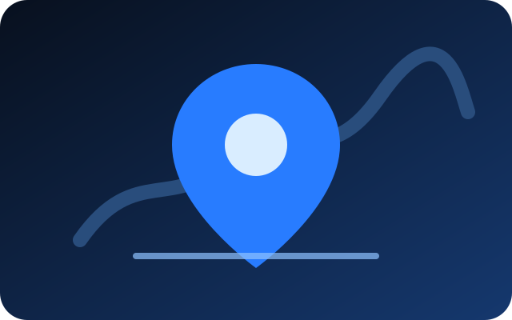

Weburix Wissenshub
Wissen, das bei der nächsten Entscheidung hilft.
Keine täglich neu erfundenen SEO-Tricks. Hier sammeln wir praktische, miteinander verknüpfte Leitfäden und aktualisieren sie, wenn sich Fakten, Tools oder Anforderungen ändern.
Weburix Leitfaden
Interne Verlinkung und Content Refresh: vorhandene Seiten gezielt stärken
Wie interne Links und regelmäßige Content-Updates die Navigation, Indexierung und Sichtbarkeit einer Website verbessern können.
Leitfaden lesen →
Weburix LeitfadenLocal SEO in München: neun sinnvolle Schritte für lokale Unternehmen
Praktischer Local-SEO-Leitfaden für Dienstleister und Unternehmen in München – von Website-Struktur bis Google Business.
Leitfaden lesen →Weburix LeitfadenGoogle Business Profil optimieren: eine saubere Checkliste für lokale Sichtbarkeit
Google Business Profil strukturiert aufbauen: Kategorien, Leistungen, Bilder, Beiträge, Bewertungen und laufende Pflege.
Leitfaden lesen →Weburix LeitfadenWas kostet eine professionelle Website in Deutschland?
Welche Faktoren den Preis einer Website beeinflussen – Seitenumfang, Texte, Design, Formulare, SEO, Mehrsprachigkeit und laufender Support.
Leitfaden lesen →